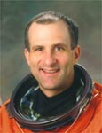

Lyndon B. Johnson Space Center
Houston, Texas 77058
|
National Aeronautics and Space Administration Lyndon B. Johnson Space Center Houston, Texas 77058 |
 |
Biographical Data |
||
Donald R. Pettit (Ph.D.)
NASA Astronaut
PERSONAL DATA: Born in 1955 in Silverton, Oregon. Married with two children.
EDUCATION: Graduated from Silverton Union High School, Silverton, Oregon, in 1973; received a Bachelor of Science in Chemical Engineering from Oregon State University in 1978 and a Doctorate in Chemical Engineering from the University of Arizona in 1983.
EXPERIENCE: Staff scientist at Los Alamos National Laboratory, Los Alamos, New Mexico from 1984 to 1996. Projects included reduced gravity fluid flow and materials processing experiments onboard the NASA KC-135 airplane, atmospheric spectroscopy on noctilucent clouds seeded from sounding rockets, fumarole gas sampling from volcanoes and problems in detonation physics. He was a member of the Synthesis Group, slated with assembling the technology to return to the moon and explore Mars (1990) and the Space Station Freedom Redesign Team (1993).
NASA EXPERIENCE: Selected by NASA in April 1996, Dr. Pettit reported to the Johnson Space Center in August 1996. A veteran of three spaceflights, Dr. Pettit has logged more than 370 days in space and over 13 EVA (spacewalk) hours. He lived aboard the International Space Station for 5-1/2 months during Expedition 6, was a member of the STS-126 crew, and again lived aboard the station for 6-1/2 months as part of the Expedition 30/31 crew.
SPACEFLIGHT EXPERIENCE: Expedition 6 (November 23, 2002 to May 3, 2003). Dr. Pettit completed his first spaceflight as NASA International Space Station Science Officer aboard the station, logging more than 161 days in space, including over 13 EVA hours. During their 5-1/2 months aboard the ISS, the crew worked with numerous U.S. and Russian science experiments. Dr. Pettit and Mission Commander Ken Bowersox performed two EVAs to continue the external outfitting of the orbital outpost. The Expedition 6 crew launched on STS-113 Space Shuttle Endeavour and returned to Earth on Soyuz TMA-1.
STS-126 Endeavour (November 14 to November 30, 2008) launched at night from the Kennedy Space Center, Florida, and returned to land at Edwards Air Force Base, California. It was NASA's 4th shuttle flight in 2008 and the 27th shuttle/station assembly mission. Highlights of the almost 16-day mission included expanding the living quarters of the International Space Station to eventually house six-member crews by delivering a new bathroom, kitchenette, two bedrooms, an exercise machine and a water recycling system. During the mission, Dr. Pettit operated the robotic arm for a total of four EVAs performed by three members of the crew. STS-126 also delivered a new resident to the station, replacing Greg Chamitoff, Expedition 17/18, with Sandy Magnus, Expedition 18. STS-126 returned to Earth after completing 250 orbits in more than 6 million miles.
Expedition 30/31 (December 21, 2011 to July 1, 2012) launched to the International Space Station aboard the Soyuz TMA-03M craft from Kazakhstan. NASA Flight Engineer Don Pettit, Russian Soyuz Commander Oleg Kononenko and European Space Agency Flight Engineer Andre Kuipers of the Netherlands docked to the Rassvet module of the station on December 23, 2011 restoring the station's crew complement to six. They continued scientific research and marked a new era of commercial resupply services from the United States by greeting the first SpaceX Dragon spaceship, which launched from Cape Canaveral Air Force Station in Florida aboard a SpaceX Falcon 9 rocket. Following a series of tests of its maneuverability and abort systems, the capsule was grappled and berthed to the space station by the crew members of Expedition 31. Dr. Petit landed in Kazakhstan after 193 days in space orbiting the Earth 3,088 times and traveling more than 76 million miles.
Dr. Pettit has spent a total of 370 days in space in three flights.
JULY 2012